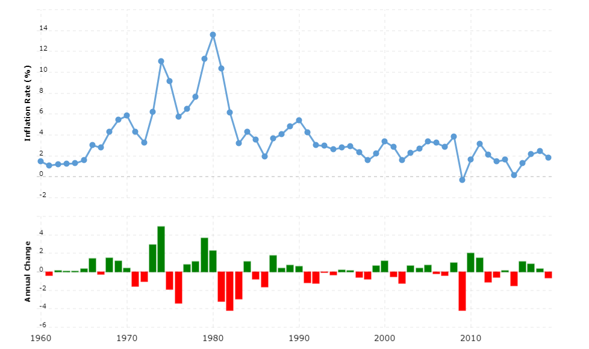
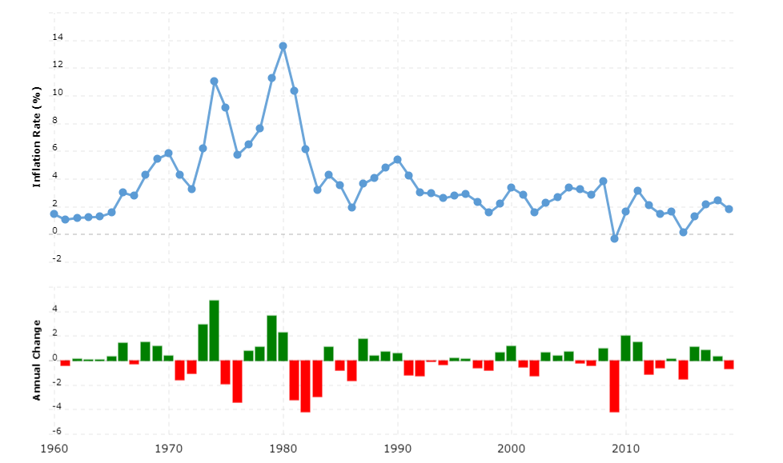

Macroeconomic Report
거시변수
지역(필수)
주목해야 될 핵심 변수들(최소 2개)
거시변수 설명에서 포함된 주요 전문용어 정의(최소 2개 필수)(인용했으면 참고 문한 반드시 표시)
핵심 키워드(필수 추가됨)(검색이랑 연관 시키는 방식 이유는 검색을 더 세부적으로 하기 위해. 그럼 리서치도 더 구체적으로 할 수 있다)
인용할 뉴스 혹은 참고 자료 최소 2개 이상 사용 및 첨부
‘국제 곡물가격 상승… “환율 하락에 국내가격 영향 아직은 제한적”,’이데일리’,’이진철 기자’, 접속일: 2021-01-15,
링크: https://www.edaily.co.kr/news/read?newsId=03319366625999832&mediaCodeNo=257
미국 물가 상승률 추이
차트 조사 기간: 1960년 ~ 2020년
출처: 사이트 링크: https://www.macrotrends.net/countries/USA/united-states/inflation-rate-cpi

링크: https://www.edaily.co.kr/news/read?newsId=03319366625999832&mediaCodeNo=257
미국 물가 상승률 추이
차트 조사 기간: 1960년 ~ 2020년
출처: 사이트 링크: https://www.macrotrends.net/countries/USA/united-states/inflation-rate-cpi
